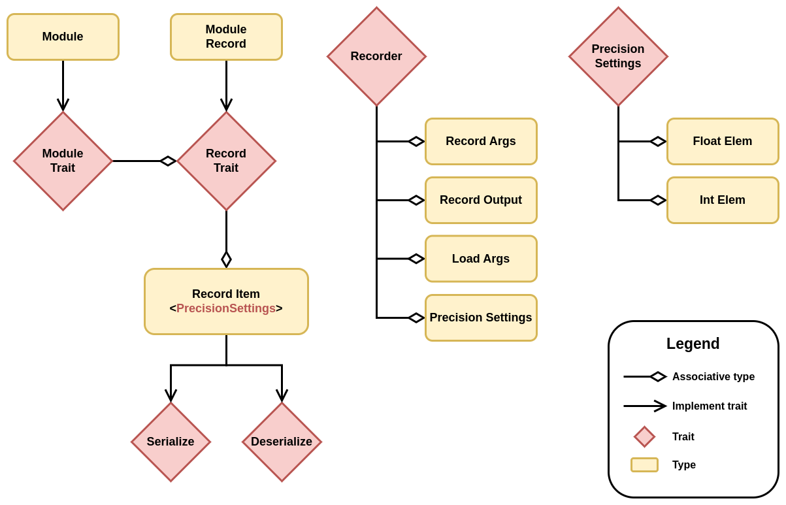

Serialization
An important aspect of a deep learning framework is the ability to save and load models from disk. Despite appearing as a simple feature, it involves numerous constraints that require a proper solution.
Constraints
-
Users should be able to declare the precision of the model to be saved, independent of the backend in use.
The modules should not be duplicated in RAM in another precision to support this. Conversion should be done lazily during (de)serialization.
-
Users should be able to add any field to a module, even fields that are not serializable.
This can include constants, database connections, other module references, or any other information. Only parameters should be serialized since the structure of the module itself should be encapsulated with module configurations (hyperparameters).
-
Users should be able to declare the format in which the module should be saved.
This can involve saving to a compressed JSON file or directly to bytes in memory for
no-stdenvironments. -
Users should be able to create a module with its saved parameters without having to initialize the module first.
This will avoid unnecessary module initialization and tensor loading, resulting in reduced cold start when dealing with inference.
In addition to all of these constraints, the solution should be easy to use.
Solution
In order to be able to add any field to a module without requiring it to be (de)serializable, we decouple the module type from its state. We create a new type for each module that only contains the parameters that need to be saved. To generate that type automatically, the user must either declare which field is a parameter or a constant, or we assume that each field implements the module trait.
The second solution was chosen as it simplifies the code generation and reduces the size of the user
API. This means that the Module trait should be implemented by
primitive types.
The following diagrams highlight the main types and traits used in the solution.
Module Serialization Types
The way the types interact with each other is pretty straightforward. First, a module can be
converted into a record using into_record(). Note that tensors can be cloned, but it won't
actually copy any data; it will simply create another reference to the same data.
Then, a Recorder instance can be used to serialize any record. The Recorder has the
PrecisionSettings type as associate type, so any record will be serialized using the settings
provided at the creation of the Recorder instance. Note that tensors implement record, and their
item is just a wrapper struct that contains information about the precision in which the tensor
should be saved or loaded. No actual copy of the tensor is made until this point. The tensor is
converted to the TensorData struct and then converted into the specified precision only when
serialize() or deserialize() are called, which makes the whole process lazy.
To recapitulate, the Module trait has an associated type that implements Record, which only
contains the parameters of the model. The Record trait has a generic associated type (GAT) that
specifies a family of types that can be (de)serialized given any PrecisionSettings. Records are
therefore decoupled from the backend in use, and the saved items can be loaded on any backend with
any precision, since the conversion is type-safe and done when serialize() and deserialize() are
called. All of the types are generated using simple derive macros without any conditional statements
or complex syntax, as Record and Module are implemented for all primitive types. This makes the
code simple and easy to maintain. In addition, you can extend the current system with your own
Recorder and PrecisionSettings to control how your modules should be saved and loaded.
Pros
- All constraints are respected.
- The code is simple and easy to maintain, with very few conditional statements. It is just recursive data structures, where all the complexity is handled by the framework in primitive implementations.
- The user API is simple and small, with only two derives (
RecordandModule) and no additional attributes. - Users can create their own
ModuleandRecordprimitive types, which gives them the flexibility to control how their data is serialized without having to fork the framework.
Cons
- There are more types, but most of them are automatically generated and single-purpose, so users don't need to interact with them for common use cases. However, they can do so if necessary.
- When instantiating a new record manually, each field must be set to something, even if the type
itself is
(), which represents no value. Since the code generation step uses associative types, it doesn't know that a field type is actually nothing. Creating a record manually without using the generated functioninto_recordor loading it from a file is only useful to load a set of parameters into a module from an arbitrary source. Using the record may not be the optimal solution to this problem, and another API could be created in the future.
Compatibility
Record may become incompatible with previous versions of Mabor, depending on the chosen format. The more compact format (bincode) store minimal information about the type, making it significantly smaller but less resilient to type changes such adding an optional field. At some point, it might be necessary to provide a translation script that can translate a more resilient format from a previous version to a more compact one.